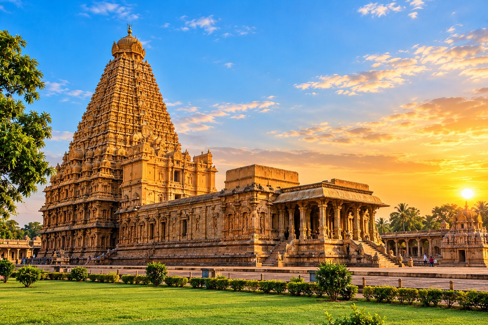
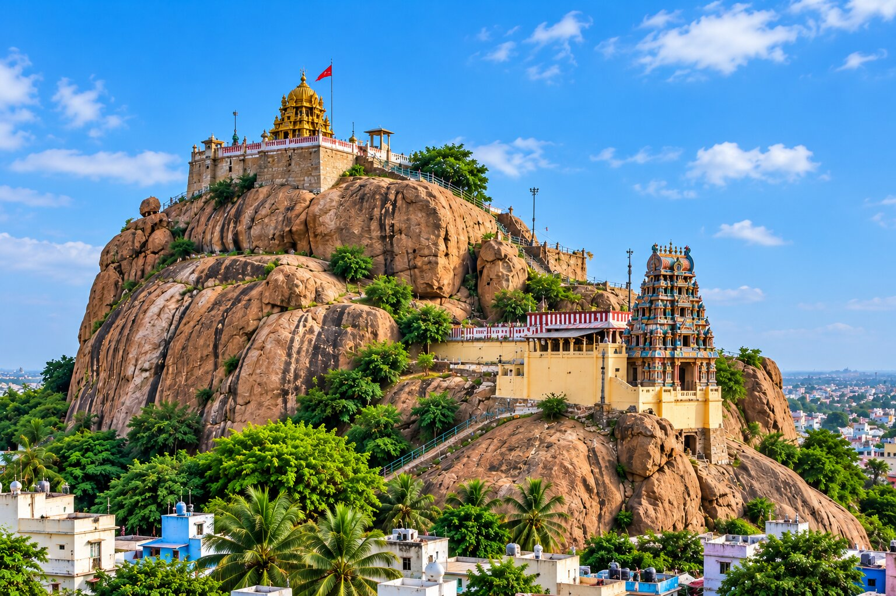
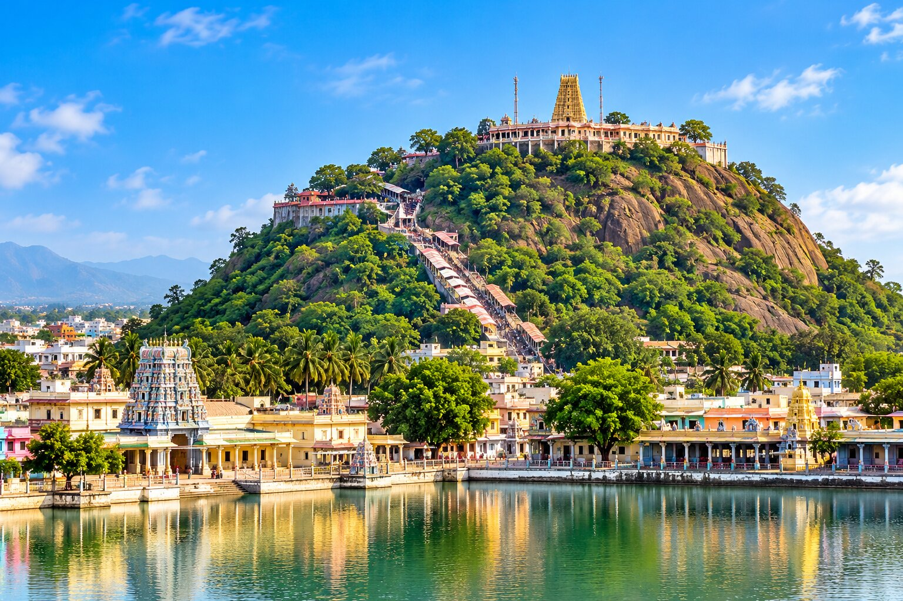
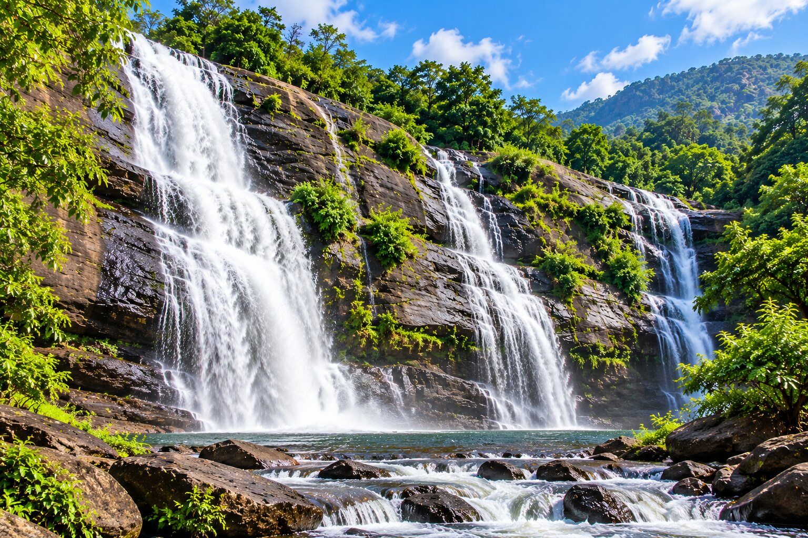
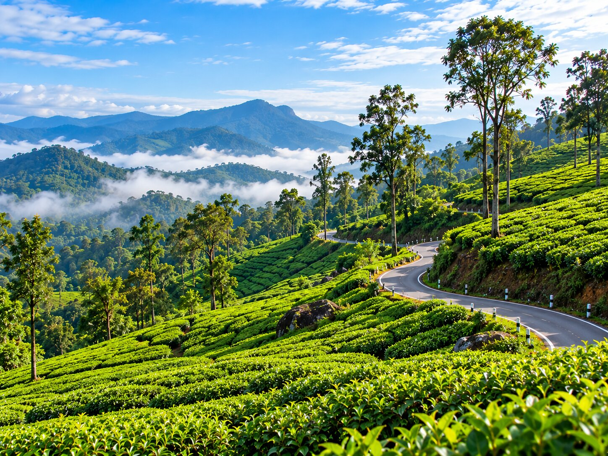
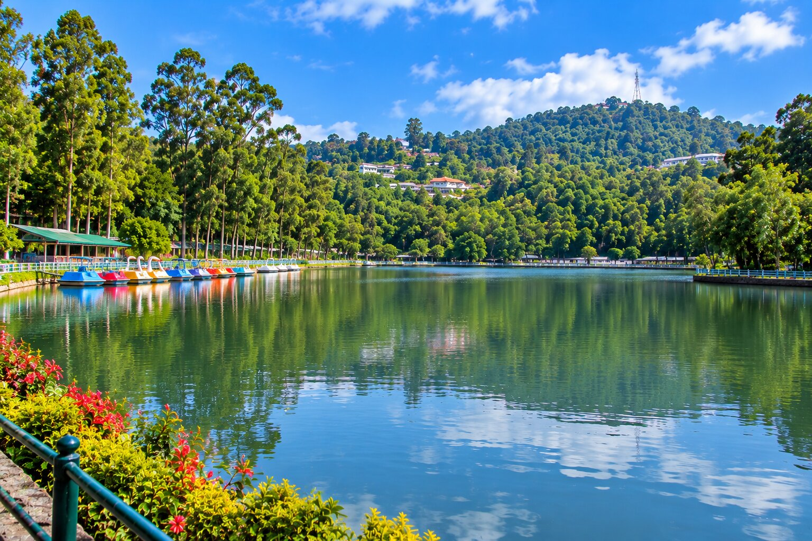
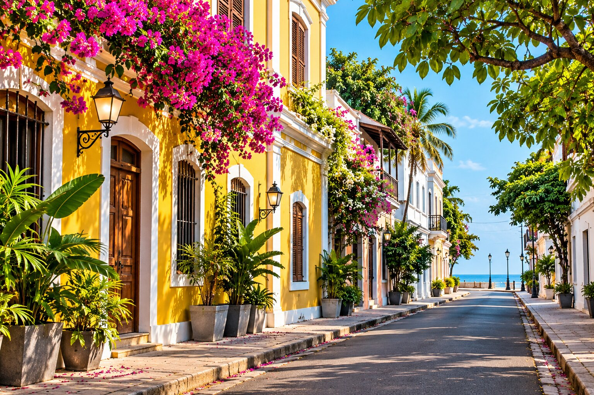
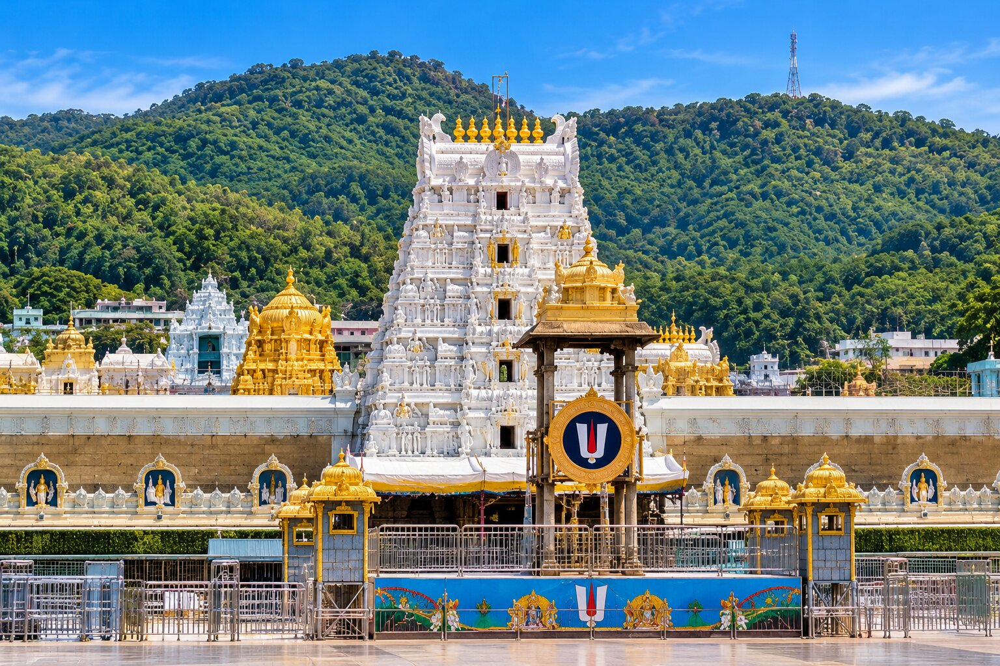

- Tamil Nadu
Kodaikanal
Explore misty mountains, scenic viewpoints, and peaceful hill-station landscapes.
Browse by trip type, then send an enquiry for the destination you like.
Explore misty mountains, scenic viewpoints, and peaceful hill-station landscapes.

Discover green tea gardens, cool mountain air, and beautiful Nilgiri scenery.

Explore coastal landscapes, iconic bridges, and important pilgrimage destinations.

Experience the cultural heritage and iconic temple architecture of Madurai.

Discover dramatic coastal scenery and memorable southern Indian landscapes.

Enjoy lush tea plantations, misty hills, and beautiful mountain scenery.

Discover tranquil backwaters and peaceful Kerala landscapes.

Explore green hills, nature destinations, and scenic forest landscapes.

Discover the magnificent Brihadeeswarar Temple and the rich cultural heritage of Tamil Nadu.

Explore the famous Rockfort Temple and the sacred Srirangam temple.

Visit the renowned hill temple dedicated to Lord Murugan.

Enjoy scenic waterfalls and a refreshing nature getaway.

Discover lush tea plantations, green hills, and beautiful mountain roads.

Enjoy peaceful lake views, wooded hills, and scenic viewpoints.

Explore charming French Quarter streets, heritage buildings, and the seaside promenade.

Visit the famous Tirumala temple and plan a memorable pilgrimage trip.
Tour packages from Sankarankovil can mean very different things to different travellers. A retired couple may want a quiet temple circuit, a school group may want a single day out, and a large family may want a hill-station holiday with everyone in one vehicle.
Because every group is different, we do not publish fixed prices, itineraries or durations. Instead, the destination cards above are starting points. Choose a destination, tap Enquire About This Trip, and tell us who is travelling, which vehicle you prefer and when you would like to go. We will discuss what is possible. The categories below explain how people commonly plan each type of trip.
Kodaikanal, Ooty and Munnar are the classic hill-station destinations for travellers from southern Tamil Nadu, and Valparai and Yercaud add tea plantations, wooded hills and quieter viewpoints. Cool air, viewpoints, lakes, gardens and tea estates make them popular for family holidays and weekend breaks. Hill roads are winding, so choose a vehicle that your group finds comfortable, carry light woollens and allow extra time for the climb. Wayanad in Kerala offers a greener, forest-focused alternative.
For temple tour packages Sankarankovil travellers request, Madurai and Rameswaram are the most popular destinations, and Thanjavur, Trichy, Palani and Tirupati are also available as temple trips. Madurai is known for the Meenakshi Amman Temple and the architecture around it, while Rameswaram is an important pilgrimage town with the Ramanathaswamy Temple and the sea-crossing Pamban Bridge. Temple days often start early and involve long waits, so tell us about elders in your group and any timing needs.
Family tour packages Sankarankovil enquiries usually mix sightseeing with rest. Many families choose one main destination, such as Kanyakumari, Courtallam or Kodaikanal, and spend time on a relaxed schedule rather than rushing between places. The 7 Seater Innova Crysta and 7 Seater Mahindra Xylo suit small families, while the Tempo Traveller and Urbania suit extended families travelling together.
One-day tour packages Sankarankovil enquiries are ideal when you have a free weekend or a festival holiday but not enough time for an overnight stay. A temple visit in Madurai or a short sightseeing route can often be planned within a single day. Share your start time, destination and the time you need to be home, and we will discuss whether the plan is realistic.
Group tour packages from Sankarankovil are popular with colleagues, friends, community groups and temple committees. When the group is large, one bigger vehicle such as the 21 Seater Van or the 25 Seater AC Van keeps everyone together and simplifies timing, meals and rest stops. Please tell us the exact number of passengers so we can suggest the right vehicle.
Munnar, Alleppey and Wayanad are the main Kerala destinations on this site. Munnar is known for tea plantations, Alleppey for backwaters and Wayanad for hills, waterfalls and forest scenery. Kerala can receive heavy rain in the monsoon months, so check weather and road conditions before travel and keep your plan flexible.
Outstation tour packages Sankarankovil enquiries cover longer routes that may involve more than one night away or a trip across the state border, for example to Pondicherry or Tirupati. Give us your full route, the number of days and your preferred vehicle. Clear details at the start help avoid confusion later and let us discuss the plan honestly.
A well-planned trip is less stressful for everyone. Here is a practical checklist you can follow before you send your enquiry.
Hill stations are popular during school holidays and festival periods, which can make accommodation and roads busy. Coastal and backwater destinations are pleasant in many months but can be affected by heavy rain. We recommend checking the weather forecast before you travel and keeping a little extra time in your schedule.
This website does not list fixed package prices, inclusions, hotel arrangements or itineraries, because those depend entirely on your plan. When you contact us we will discuss your requirements honestly and tell you what we can arrange.
We do not publish fixed prices or itineraries online. Choose a destination, send an enquiry and we will discuss what suits your group.
Yes. Mention every place you would like to visit in the additional requirements box or in WhatsApp.
Both are important temple destinations. Madurai is a good fit for a shorter visit, while Rameswaram usually needs more time. Tell us your timings and we can discuss the plan.
You can enquire for groups up to the capacity of our largest vehicle, the 25 Seater AC Van. Share your passenger count so we can suggest the right option.
Choose a destination, add your travel date and send your enquiry by WhatsApp.
Contact Us